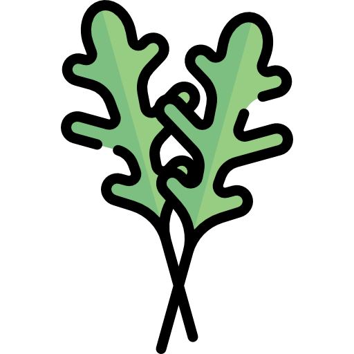

Légumes

Légumes-feuilles

- Laitue romaine (éviter la laitue iceberg)
- Épinards (avec modération)
 Cresson
Cresson- Roquette
 Pissenlit
Pissenlit- Persil
 Coriandre
Coriandre- Menthe
 Basilic
Basilic- Fenouil
Légumes racines

-
Carottes (en
petites quantités)
-
Navets (feuilles
et racines)
Légumes-fruits

 Courgettes
Courgettes- Concombres
- Poivrons (toutes les couleurs)
-
 Tomates (avec
modération, sans les feuilles et les tiges)
Tomates (avec
modération, sans les feuilles et les tiges)
Autres légumes

-
 Brocoli
(feuilles et tiges, éviter les fleurons en grande quantité)
Brocoli
(feuilles et tiges, éviter les fleurons en grande quantité)
- Céleri
-
 Choux de
Bruxelles
Choux de
Bruxelles
-
 Chou frisé
(kale)
Chou frisé
(kale)
 Endives
Endives-
 Chou-rave
(feuilles et bulbe)
Chou-rave
(feuilles et bulbe)
-
 Radis (feuilles
et racines, en petites quantités)
Radis (feuilles
et racines, en petites quantités)
Herbes aromatiques
- Persil
- Coriandre
- Menthe
- Basilic
- Aneth
-
 Thym
Thym
-
 Romarin
Romarin
-
 Origan
Origan
Fruits (en petites quantités)
-
 Pommes (sans les pépins)
Pommes (sans les pépins)
 Bananes
Bananes- Fraises
 Framboises
Framboises Mûres
Mûres Myrtilles
Myrtilles- Poires (sans les pépins)
 Ananas
Ananas Mangues
Mangues-
 Pêches (sans le noyau)
Pêches (sans le noyau)
- Prunes (sans le noyau)
 Melon
Melon-
 Pastèque (sans les
pépins)
Pastèque (sans les
pépins)
Herbes et graminées
-
 Foin de
prairie
Foin de
prairie
-
Foin de
Timothy (foin de fléole des prés)
-
Foin de
luzerne (surtout pour les jeunes lapins)
-
Pissenlit
 Trèfle
Trèfle-
 Herbe de blé
Herbe de blé
Fleurs Séchées

-
Pissenlit
- Souci
- Rose
- Camomille
- Lavande
- Hibiscus
- Bleuet bleue
- Bleuet rouge
- Pâquerette
- Mauve
Autres

-
 Branches et
feuilles de pommier (non traitées aux pesticides)
Branches et
feuilles de pommier (non traitées aux pesticides)
- Branches de saule
- Branches de noisetier
-
Feuilles de framboisier
-
 Feuilles de
mûrier
Feuilles de
mûrier
- Ortie
Aliments à éviter absolument

- Chocolat
-
 Produits
laitiers
Produits
laitiers
 Aliments sucrés
Aliments sucrés- Aliments gras
 Aliments salés
Aliments salés-
 Pommes de
terre
Pommes de
terre
 Rhubarbe
Rhubarbe- Haricots
 Avocat
Avocat Oignons
Oignons Ail
Ail